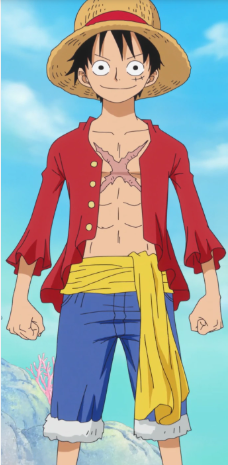
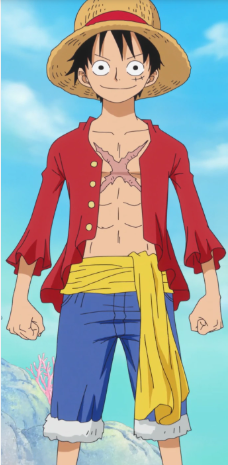
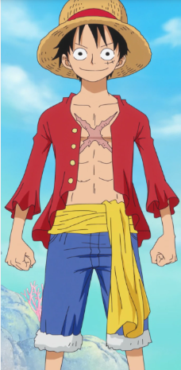

One Piece es un manga y anime japonés creado por Eiichiro Oda. La historia sigue las aventuras de Monkey D. Luffy, un joven que quiere ser el Rey de los Piratas y que para ello debe encontrar el One Piece, el tesoro más grande del mundo, dejado por el anterior rey, Gol D. Roger. One Piece se publica desde 1997 en la revista Weekly Shonen Jump y cuenta con más de 100 volúmenes

Mi primer sitio web, hecho con amor por Arian en el bootcamp de Tecnolochicas PRO